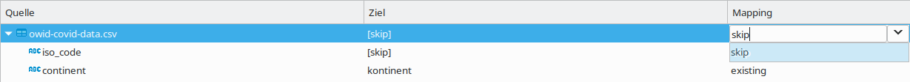

Aufgabe 1: Datenimport aus einer CSV-Datei (10P)
Abgabe-Deadline: 14.06.2022 8:00 im Moodle
In diesem Übungsblatt geht es darum, die aktuellen Corona-Impfzahlen als CSV-Datei herunterzuladen, diese in eine PostgreSQL-Datenbank zu importieren und Analysen mit SQL darauf auszuführen.
- Laden Sie die Datei "owid-covid-data.csv" von https://github.com/owid/covid-19-data/tree/master/public/data/ herunter.
- Betrachten Sie die Datei direkt im Browser oder in einem Texteditor (nicht mit Excel o. ä.). Schauen Sie sich an, welche Spalten es gibt, was das Spaltentrennzeichen ist, in welchem Format Datumswerte gespeichert werden, etc.
- Verbinden Sie sich mit der PostgreSQL-Datenbank der Hochschule (oder Ihrer eigenen PostgreSQL-Installation) und erstellen Sie die folgende Tabelle:
create table impfungen
(datum date, land varchar(50), kontinent varchar(50),
impfungen decimal(10,1), primary key(datum, land));
- Klicken Sie im DBeaver mit einem Rechtsklick auf die neue Impfungen-Tabelle (vorher: Rechtsklick - Aktualisieren) und dann auf Daten importieren und wählen als Datentyp
CSV, dann Ihre Quelldatei. Überprüfen Sie die Import-Einstellungen und achten Sie darauf, dass das Spaltenkennzeichen, Datumsformat etc. richtig eingestellt ist. Wichtig ist jedoch noch im vorletzten Schritt das Column-Mapping. Wählen Sie dort aus, welche Spalten aus der CSV-Datei mit welchen Spalten aus der soeben erstellten Tabelle korrespondieren. (8P)
- Schauen Sie sich nach erfolgreichem Import die Tabelle an.
- Es gibt jede Menge Zeilen, bei denen das Land gar kein Land ist, sondern "World", "Europe" o.ä.. Sie erkennen dies daran, dass in der Kontinent-Spalte ein leerer String steht (oder NULL, falls Sie in den Import-Einstellungen eingestellt haben, dass leere Strings in NULL-Werte konvertiert werden sollen). Löschen Sie diese Zeilen. Zur Überprüfung: Das sind ca. 5% der Zeilen.
- Überprüfen Sie, ob Sie die Daten korrekt importiert haben, indem Sie die unten abgebildete Zeile in Ihrer Tabelle wiederfinden. Wie lautet der fehlende Wert in der Impfungen-Spalte? (2P)
- Wie viele verschiedene Länder tauchen in der Tabelle auf? (2P)
| datum | land | kontinent | impfungen |
|---|
| 2022-05-01 | Germany | Europe | ??? |
Hinweise sind auf der nächsten Seite.
Hinweise:
- Setzen Sie beim Spalten-Mapping zuerst alle Spalten der CSV-Datei auf Skip (ansonsten werden neue Spalten an Ihre Tabelle angefügt) und danach wählen Sie bei den entsprechenden Spalten der CSV-Datei als Ziel die jeweilige Spalte in Ihrer Tabelle aus:

- Viele Spalten in der CSV beinhalten bereits voraggregierte Werte. total_vaccinations ist beispielsweise die Summe aller Corona-Impfungen bis zu diesem Tag innerhalb eines Landes. Diese Zahlen wollen wir nicht importieren, sondern nur die Rohdaten, also die neu hinzugekommen Fälle von dem einen Tag.
- Falls Sie sich über den Datentyp DECIMAL(18,1) wundern: Die Anzahl der Impfungen haben in der CSV immer eine .0-Nachkommastelle. DBeaver macht leider Blödsinn, wenn Dezimalzahlen in INT-Spalten importiert werden. Dann erscheint eine 123.0 als 1230.
- Wenn Sie aus irgendeinem Grund die Daten neu importieren müssen, droppen Sie am besten vorher die Tabelle und erstellen Sie neu.